MS-102 Lab 2 - Groups and License Assignment
Published: April 25, 2026
Overview
This lab demonstrates how to use Security groups and Microsoft 365 groups, and how to implement group-based licensing in Microsoft 365.
Objective
Build and manage groups in Microsoft 365 where:
- Users are organized using groups
- Licenses are assigned via groups
- Access is controlled using group membership
Requirements
Devices / Tools
- Microsoft 365 tenant (same as Lab 1)
- Admin access account
Tasks
Task 1 - Create Groups
Create the following groups:
| Group Name | Type |
|---|---|
| HR Team | Security |
| IT Team | Microsoft 365 |
| IT Licensing | Security |
Go to:
- Microsoft 365 Admin Center > Teams & groups > Active teams & groups
IT Team
- Named Microsoft 365 group IT Team
- Assigned myself as the owner of the group
- Skipped members as I will be adding them afterwards
- Email address is IT@HurkSystems.onmicrosoft.com
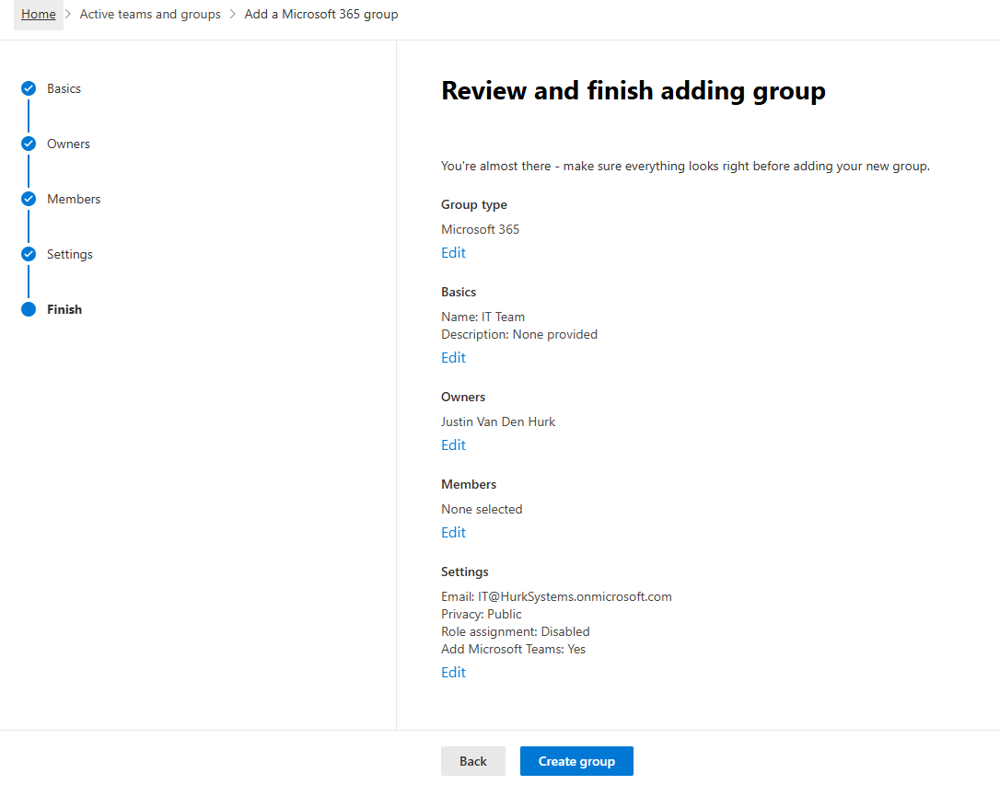
HR Team
- Named Security group HR Team
- Did not apply role assignment
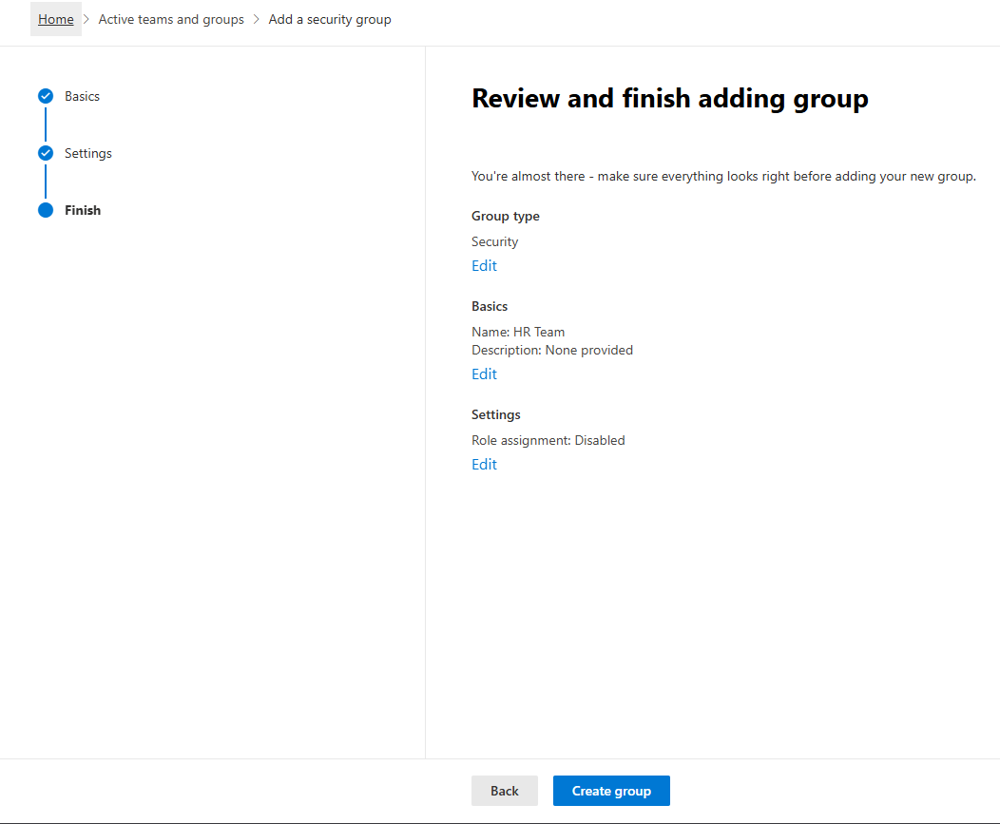
IT Licensing
- Named Security group IT Licensing
- Did not add role assignment
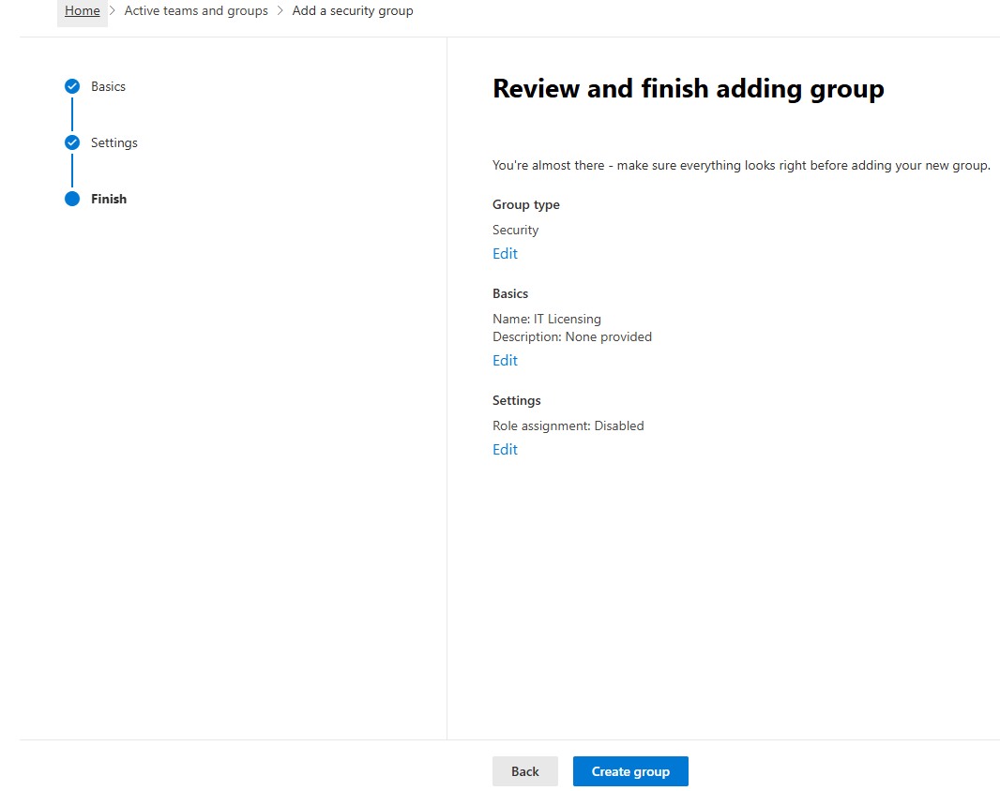
Task 2 - Add Users to Groups
Add users:
- Alice > HR Team
- Bob > IT Team
- Bob > IT Licensing
Assigned Bob to IT Team by going to Active teams & groups > Membership > Members > Add members > searched Bob > added Bob.
Assigned Bob to IT Licensing by going to Active users > Bob > Account > Manage groups > Assign memberships > selected IT Licensing > Add.
Assigned Alice to HR Team by going to Security groups > Members > View all and manage members > Add member > selected Alice > Save.
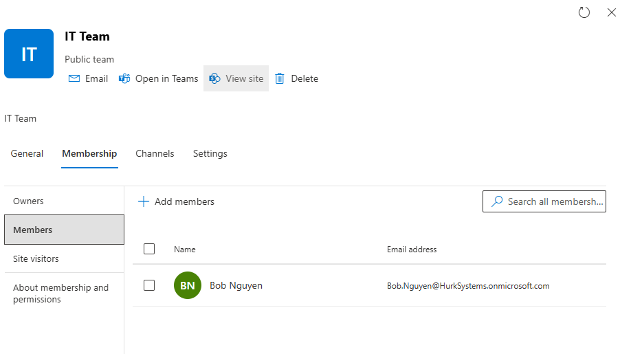
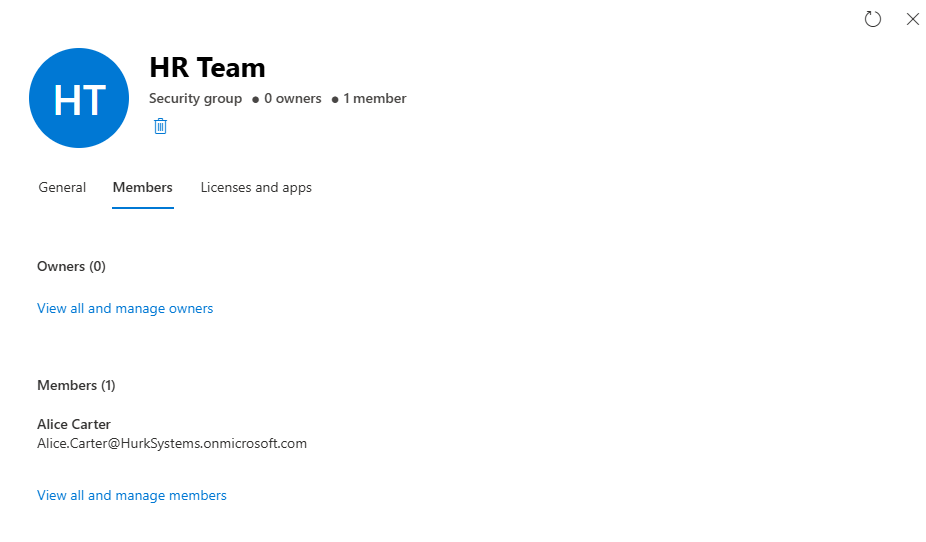
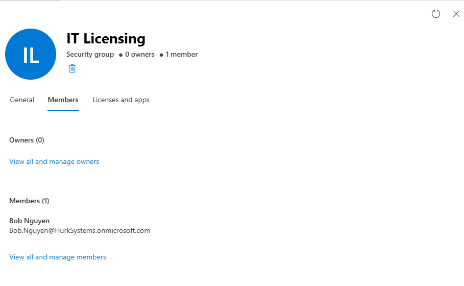
Task 3 - Explore Group Types
Go to:
- Microsoft 365 Admin Center or Entra ID > Groups
Purpose: Groups are ways to assign users access to certain privileges or applications.
Security Group
Security groups are for granting access to company resources like tools, portals, reports, and devices.
Microsoft 365 Group
Microsoft 365 groups are for collaboration within the organization. They include a group email address and SharePoint.
Task 4 - Assign License via Group
- Remove direct license from Bob
- Assign Microsoft 365 E3 license to IT Licensing security group
Go to:
- MS365 Admin Center > Teams & groups > Active teams & groups > IT Licensing > Licenses and apps
License Removal
Removed the direct Microsoft 365 E3 license from Bob.
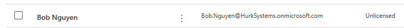
Group-Based License Assignment
Assigned Microsoft 365 E3 license to the IT Licensing group.
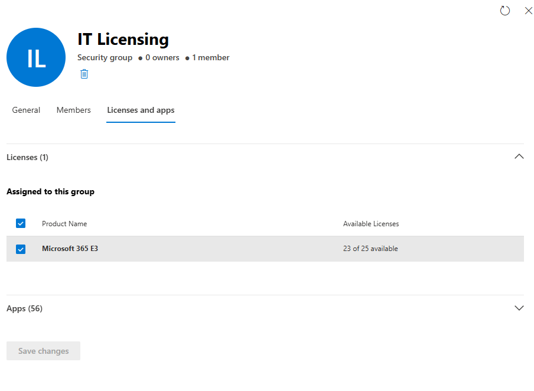
Note
Initially, a Microsoft 365 group was used for licensing, but the option was not available. This is because only Security groups support group-based licensing. A Security group named IT Licensing was created to resolve this.
Task 5 - Test Group-Based Licensing
Check Bob:
- Does Bob now have a license again?
Bob now has a license because he is a member of the IT Licensing security group, which has a license assigned to it.
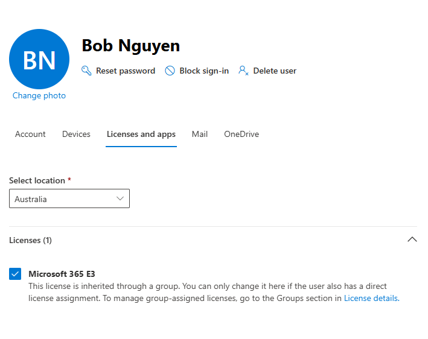
Task 6 - Verify in Entra ID
Go to:
- Entra ID > Users > Bob
Check:
- Assigned licenses
- Group memberships
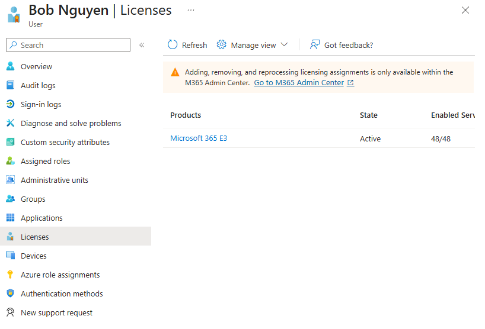
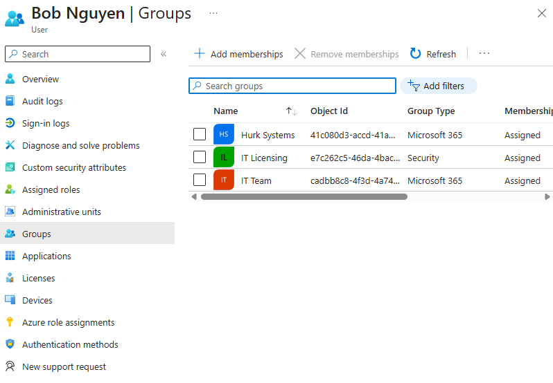
Knowledge Test
1. What is the difference between a Security group and a Microsoft 365 group?
A Security group is for granting access to company resources, while a Microsoft 365 group is for collaboration within the company.
2. Why would you assign licenses to a group instead of a user?
Assigning licenses to a group applies the license to all users within that group, instead of assigning licenses to each user manually.
3. What happens when a user is removed from a licensed group?
When a user is removed from a licensed group, they lose all licenses associated with that group.
4. Where can group-based licensing be configured?
Group-based licensing can be configured in Microsoft 365 Admin Center > Teams & groups > Active teams & groups.
5. What determines a user’s final access when they are in multiple groups?
A user’s final access is determined by the combined permissions from all groups they are assigned to, along with licenses and roles.